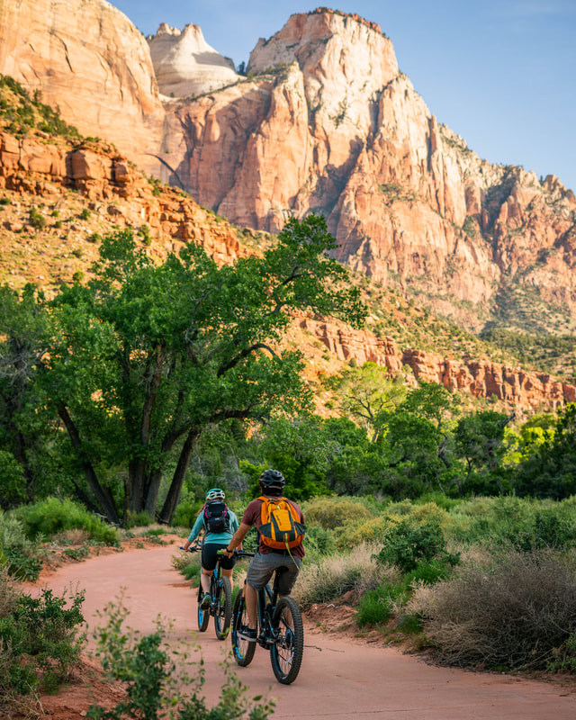
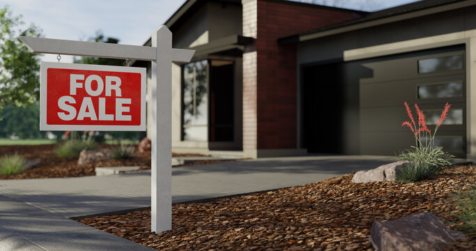

Moving to Southern Utah
Discover our communities, neighborhoods, and what it's like to call Southern Utah home.


Come for the Beauty... Stay for the Lifestyle.
There's something special about Southern Utah. From our breathtaking red rock landscapes and beautiful golf courses to endless outdoor adventures and a lifestyle that's hard to match, it's easy to understand why so many people are drawn here. But finding the right place to call home is about more than beautiful scenery. It's about discovering a community and a lifestyle that truly fit you.
Having lived in Southern Utah for more than 30 years and helped buyers and sellers navigate our local real estate market for most of those years, I understand that every move comes with its own questions, priorities, and possibilities. Whether you're relocating, planning for retirement, searching for your next home, or preparing to sell, I'm here to help you explore your options and make informed decisions with confidence.
Discover our communities, neighborhoods, and what it's like to call Southern Utah home.

Explore golf, boating, hiking, biking, and the possibilities for your next chapter.

Are you ready to call Southern Utah home? Discover how to prepare for your next move.